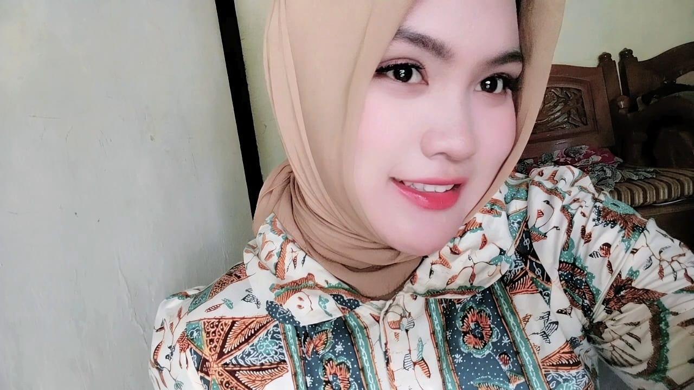
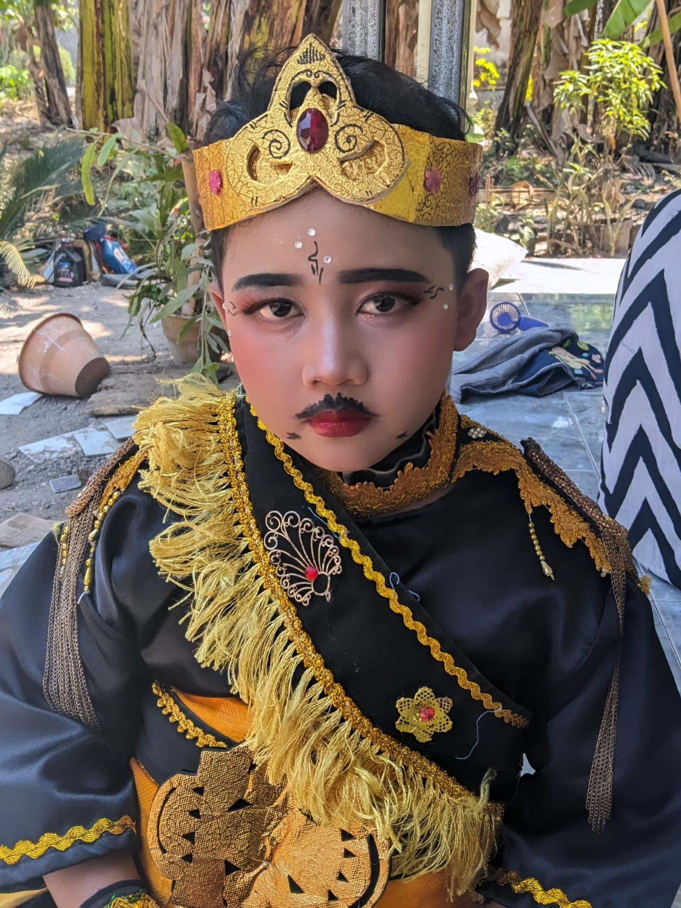

KEGIATAN BERLIAN
DI LUAR
SEKOLAH
Dari memandu acara hingga mulai berkarya di dunia tata rias, setiap kegiatan menjadi ruang untuk belajar dan berkembang.
JELAJAHI KEGIATANBERBAGI CERITA DI ATAS PANGGUNG
MASTER OF CEREMONY
Berlian menjadi Master of Ceremony dalam acara formal maupun nonformal, belajar membawakan acara dan membangun suasana bersama para tamu.

Master of Ceremony
Memandu acara dan menyampaikan susunan kegiatan dengan percaya diri.

Acara Formal & Nonformal
Menyesuaikan pembawaan dengan suasana dan karakter setiap acara.
BELAJAR & BERKREASI
MUA PEMULA
Berlian juga mulai menekuni tata rias sebagai MUA pemula. Setiap kesempatan menjadi pengalaman untuk berlatih, mengasah kreativitas, dan mengenal dunia makeup.

Perjalanan MUA Pemula
Berlatih dengan teliti dan terus belajar dari setiap pengalaman merias.

Kreativitas dalam Tata Rias
Mengeksplorasi warna dan detail sebagai bagian dari proses berkarya.
Keberanian mencoba membuka banyak cara untuk bertumbuh dan berkarya.
KEHIDUPAN DI SEKOLAH ↗